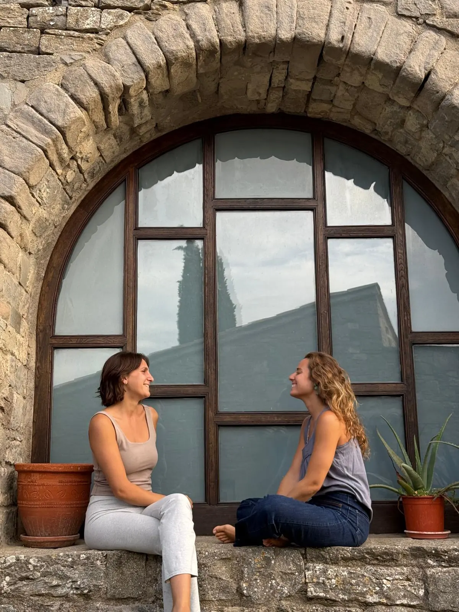
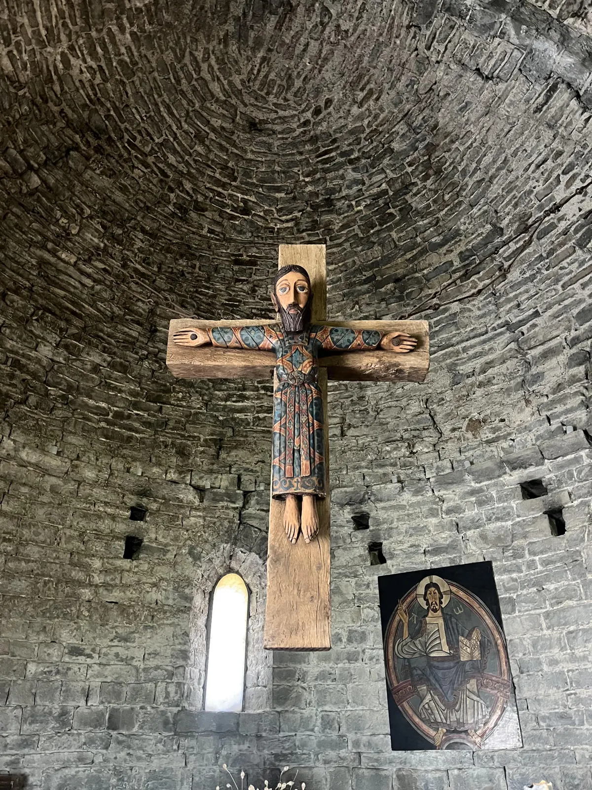
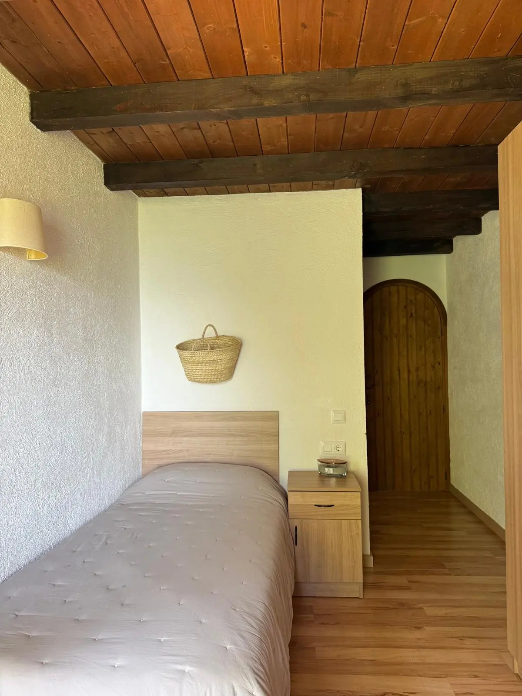
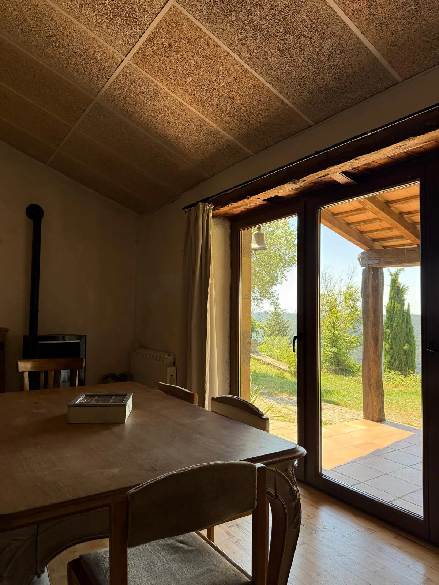

Un espacio para volver a lo esencial, a reconectar desde el corazón, en la naturaleza, siendo tribu.
Creemos que para encontrar paz hay que mirar hacia adentro, detenerse un momento y sentir dónde están nuestros pies, observarnos y abrazar lo que somos con ternura.
Pero también sabemos que no todo radica en la comprensión de una misma, y que también hay que mirar a nuestro alrededor y celebrar el regalo de la vida junto con nuestras iguales: reír, cantar, crear y bailar con el corazón lleno.
Este retiro se teje entre estas dos verdades: habitar el presente y celebrarlo.
Un fin de semana entre mujeres, siendo lo que nuestras antepasadas sabían ser.tribu.
Cada retiro tiene su propio recorrido, pero suele tejerse con algunas de estas prácticas:
Las actividades concretas varían de un retiro a otro — esta web es genérica para todos ellos, y cada fecha puede tener su propio énfasis.
Hemos decidido no avanzar el contenido ni los horarios del programa. Queremos que este fin de semana podáis vivir cada momento plenamente sin pensar en el reloj, ni en lo que está por venir.
Lo único que necesitáis saber antes de llegar:
Llegada a partir de las 17h
Ceremonia de apertura 19h
Ceremonia de cierre 15:30h
Salida sobre las 17h
Margarita Margenat & Lucía Echenique
Psicóloga y terapeuta · Profe de yoga y masajista taiHe aquí la historia de dos amigas que se conocieron haciendo voluntariado en un centro de yoga en Koh Phangan. En seguida descubrimos que compartíamos la pasión por el crecimiento personal y por sostener espacios seguros de reconexión.
Ambas hemos navegado varias disciplinas, siempre explorando y buscando más auto-conocimiento y comprensión, y es desde todos esos viajes y aprendizajes que hemos creado este proyecto.

Sant Salvador de Bellver es una iglesia románica del siglo XII en Sant Boi de Lluçanès. Durante años la guardó un monje y sacerdote cristiano, Marcel Capellades, que mantuvo sus puertas abiertas a todo aquel que llegara en son de amor y crecimiento. Hoy, una preciosa comunidad cuida la ermita y mantiene el legado de Marcel.
Junto a la iglesia se encuentra una casa, que ha sido reformada y acondicionada a lo largo de los años para recibir a los visitantes, con sencillez, pero con comodidad.
Este espacio se sostiene y abre sus puertas gracias a las donaciones de aquellos que lo disfrutan y lo valoran.

Habitación privada
Nos alojamos en una casa con mucha historia y buena energía. Cada una duerme en una habitación privada con cama individual y un pequeño baño privado. Las comidas se sirven en el comedor común.

Casera, con presencia y agradecimiento
No seguimos ninguna pauta dietética concreta: creemos que para que la comida sea sana debe ser casera, hecha con ingredientes naturales, locales y de calidad, cocinada con amor y comida con presencia y agradecimiento. Cocinamos y servimos nosotras mismas, como parte de nuestra ofrenda.

Reserva 50€
Este importe fijo cubrirá los gastos de comida del fin de semana.
El resto funciona a donativo consciente. Podrás donar a la ermita de Sant Salvador de Bellver, para que pueda seguir abierta y recibiendo a quien la visita, y a nosotras, para apoyar este proyecto.
Completa el formulario y te contamos todos los detalles.
Rellenar el formulario no confirma tu plaza — os contactaremos para confirmar la reserva.
El trayecto final es algo pedregoso — recomendamos hacerlo en 4x4. Si no tenéis, os ofrecemos transfer desde un parking más abajo (ubicación y precio a definir). También podemos coordinar compartir coche desde Barcelona u otras ciudades de origen.